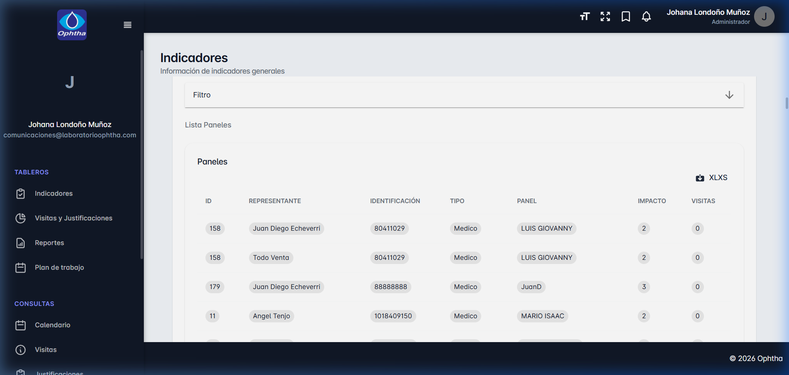
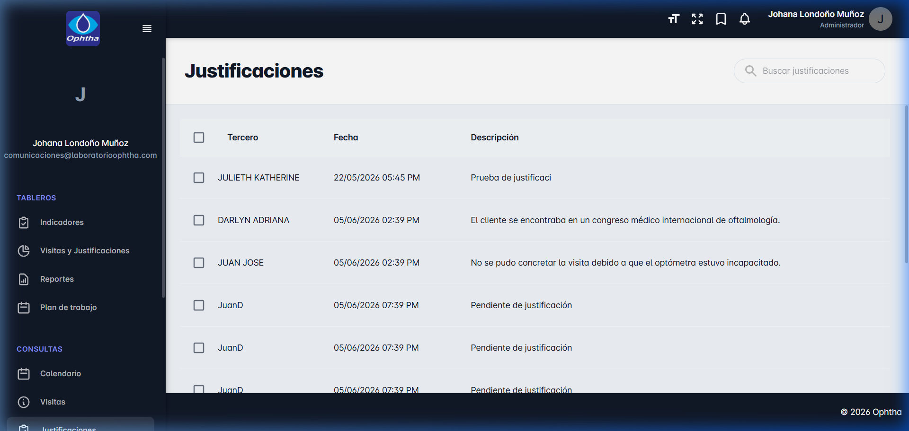
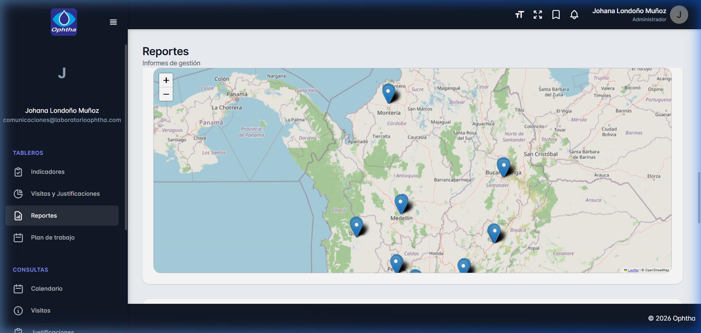
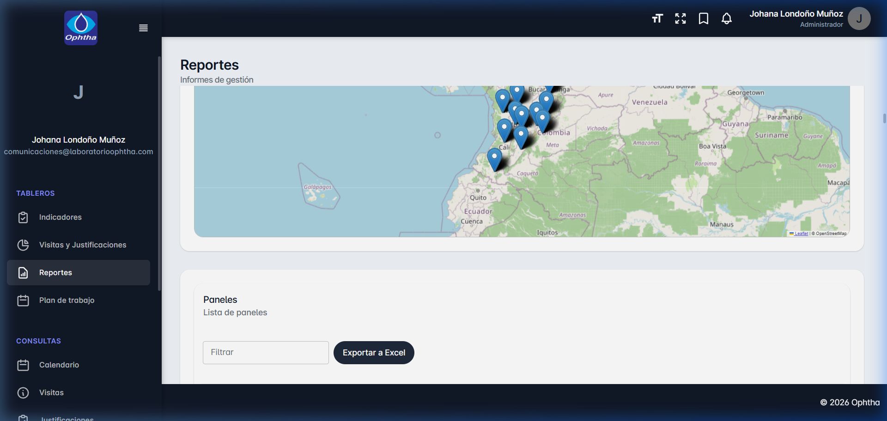

Manual del Usuario Kaizen 3.0
Guía de usuario interactiva y técnica de la plataforma de geomarketing, auditoría y productividad.
🚀 Introducción
Bienvenido al manual oficial del sistema de gestión y productividad de Ophtha (Kaizen 3.0), accesible desde la web oficial de producción: https://kaizenophtha.com.
Este sistema ha sido diseñado para centralizar y optimizar la auditoría de visitas médicas, la gestión geográfica de paneles de droguerías y médicos, y el planeamiento diario de trabajo de la fuerza comercial. Su estructura de base de datos corre bajo PostgreSQL y su lógica de negocio está totalmente optimizada con arquitecturas modernas de TypeScript y React.
Roles principales del Sistema
- Administrador: Johana Londoño Muñoz (y equipo directivo). Tienen control total sobre todos los paneles de médicos del país, pueden auditar e invalidar visitas, aprobar justificaciones, reasignar portafolios comerciales a cualquier usuario, realizar importaciones masivas y consultar historiales de sesiones e IPs de seguridad.
- Representante: Fuerza comercial y visitadores. Cuentan con acceso personalizado exclusivo al portafolio de médicos que tienen a su cargo. Pueden planificar su agenda semanal, reportar visitas en tiempo real basándose en su ubicación móvil, cargar firmas digitales y registrar justificaciones cuando corresponda.
Escenario: La Directora de Mercadeo desea evaluar si la fuerza comercial de la zona Norte cumplió con la frecuencia de impactos programada para el mes de Junio de 2026.
Procedimiento:
El representante reporta sus visitas in situ validadas por GPS. Al cerrarse el mes, el sistema compara el impacto requerido de cada médico contra las visitas reales. Los médicos insatisfechos requieren una justificación del visitador, que la supervisora valida desde su panel de control antes de liquidar el indicador.
🔑 Seguridad y Doble Factor (2FA)
Kaizen 3.0 integra un módulo de seguridad avanzada de **Autenticación de Dos Factores (2FA)** para asegurar que los datos del negocio y los paneles comerciales permanezcan protegidos. Al activarlo, el inicio de sesión requerirá no solo la contraseña, sino también un token digital temporal generado desde su celular.
Cómo Activar el 2FA en su Cuenta
Inicie sesión con su usuario y contraseña normal y navegue a la URL de configuración de seguridad: https://kaizenophtha.com/settings/reset-password.
Abra una aplicación de autenticación en su celular (como Google Authenticator o Authy) y seleccione "Escanear código QR". Escanee el QR mostrado en la pantalla de Kaizen. (Si la cámara no funciona, puede ingresar manualmente el código secreto de texto provisto).
Ingrese el código temporal de 6 dígitos que genera la aplicación móvil de su celular en el campo "Verificar token" de la pantalla de Kaizen y presione "Activar". Si el código coincide, el estado del consentimiento 2FA pasará automáticamente a activo.
Una vez activado el 2FA, cada vez que intente iniciar sesión en https://kaizenophtha.com/sign-in, el sistema validará sus credenciales tradicionales y luego le mostrará una interfaz secundaria obligatoria solicitándole el código de 6 dígitos activo en su celular para poder acceder.
Problema: Un visitador pierde su teléfono celular y no puede obtener el token de 6 dígitos para iniciar sesión en la web.
Solución para el Administrador:
El administrador debe ir al panel de Usuarios, ubicar la ficha del visitador afectado, y hacer clic en el botón de seguridad "Desactivar 2FA". Esto restablece la autenticación del usuario al modo clásico temporalmente para que pueda ingresar solo con clave y volver a configurar su nuevo dispositivo.
👥 Registro Individual de Médicos y Droguerías
Los médicos, droguerías o paneles comerciales constituyen el núcleo del sistema, referenciados internamente como **Terceros (Thirds)**. Pueden administrarse desde la ruta: https://kaizenophtha.com/records/thirds.
Pestañas de la Ficha del Cliente (Tercero)
- Información Personal: Tipo de panel (médico, droguería), identificación, nombres, apellidos, género y fecha de nacimiento.
- Información de Contacto: Correo electrónico, teléfono, celular, dirección física y ciudad.
- Coordenadas GPS Manuales: En esta pestaña se visualizan la Latitud y Longitud geográficas de la dirección. Si editas a un médico y sus coordenadas son nulas, puedes presionar el botón **"Obtener mi ubicación GPS actual"** para que el navegador autocomplete las coordenadas geográficas de donde estás parado en ese momento de forma manual.
- Información adicional (Habeas Data): Clasificación (A, B, C), Especialidad médica, Subespecialidad y Región (Boyacá, Antioquia, Bogotá, etc.). También incluye el consentimiento de Habeas Data.
Módulo de Consentimiento de Habeas Data
Kaizen 3.0 integra dos formas para asegurar el cumplimiento legal del Habeas Data (obligatorio para la visita médica):
- Firmar en Pantalla (Modal de Firma Digital): Al hacer clic en esta opción, se despliega una pizarra táctil interactiva. El médico o cliente puede realizar su firma manuscrita con su dedo en la pantalla del celular/tablet, o con el ratón en la PC. El sistema procesa la firma en formato digital de imagen y la asocia al registro.
- Subir Documento Firmado: Permite cargar directamente un documento PDF o imagen del consentimiento físico escaneado. Los documentos se almacenan de forma segura en la nube de Amazon S3.
Ejemplo práctico: Un visitador se encuentra en el consultorio del Dr. Felipe. El doctor acepta el acuerdo de Habeas Data pero no desea firmar de forma manuscrita en la pantalla digital.
Solución: El visitador le toma una foto al formulario de consentimiento físico firmado por el doctor. Más tarde, el administrador carga dicha foto en la ficha del tercero bajo la sección "Subir Documento" en la pestaña Información Adicional. El archivo se sube automáticamente al S3 de Amazon y la cuenta queda validada como Otorgado ✓.
📥 Importación Masiva desde Microsoft Excel
Para cargar paneles comerciales de forma masiva, los administradores pueden descargar la plantilla Excel pre-configurada e importar miles de registros a la vez en la URL: https://kaizenophtha.com/records/thirds.

Reglas de Normalización del Importador Inteligente
- Títulos de Columnas: El sistema limpia tildes, mayúsculas y espacios. Columnas como
Nombre,Dirección,CédulaoTipo Panelse interpretan correctamente sin importar el formato. - Fechas de Cumpleaños: Soporta formatos sencillos del tipo
DD-MM(Ej: 14-06) y los parsea a un tipo de fecha válido interna y automáticamente. - Geografía y Región: Valida que el nombre de la ciudad y la región coincidan con el catálogo interno de base de datos de Kaizen, enlazándolos de forma automática.
Tras finalizar el procesamiento del archivo Excel, Kaizen le mostrará un modal detallando el número exacto de filas importadas con éxito. En caso de fallar alguna fila (por ejemplo, correo electrónico inválido o región inexistente), el log le indicará exactamente la fila y el motivo del error, permitiendo corregir el archivo y volverlo a subir sin duplicar datos.
Escenario: Un administrador sube un listado de 50 droguerías nuevas. El sistema reporta: Fila 12: Región 'Norte' no coincide con las registradas.
Procedimiento de Corrección:
El administrador no tiene que preocuparse por duplicados. Las otras 49 droguerías ya fueron guardadas con éxito. El administrador solo debe abrir su Excel local, corregir la fila 12 cambiando 'Norte' por la región válida (por ejemplo, 'Costa'), guardar el Excel y volverlo a subir. El sistema ignorará los duplicados por cédula/NIT y procesará con éxito la droguería restante.
📂 Gestión de Portafolios (Asignación Asesor/Cliente)
El portafolio determina la relación comercial entre los asesores (representantes) y los médicos. Ningún representante comercial puede visitar o planificar tareas con un médico que no esté formalmente aprobado y asignado en su portafolio.
Los administradores pueden gestionar el portafolio de cada asesor en la URL: https://kaizenophtha.com/records/users, seleccionando un usuario y abriendo la pestaña "Portafolio".
Acciones del Administrador de Portafolio
Cuando un representante comercial solicita asociar un médico a su portafolio, el estado inicial de la relación queda en "pendiente" (no aparece en sus listados activos). El administrador puede dar clic en el botón de aprobación para activarlo, o en el de pulgar abajo (👎) para denegar o retirar la aprobación de inmediato.
El botón de papelera elimina la relación física en base de datos entre el asesor y el médico, liberando al cliente o desvinculándolo de esa cuenta comercial.
Mediante los checkboxes de selección a la izquierda del listado de médicos de cada portafolio, se pueden seleccionar de forma simultánea múltiples registros para aprobarlos o desasignarlos en lote con un solo clic.
Escenario: El representante Andrés es trasladado a otra línea, y el visitador Carlos tomará a su cargo sus 15 médicos de Medellín.
Procedimiento:
1. El administrador ingresa al perfil de Andrés, selecciona a los 15 médicos mediante los checkboxes de su portafolio, y da clic en "Desasignar seleccionados".
2. Luego, entra al perfil de Carlos, busca en la barra "Asignar panel" a cada uno de estos médicos Medellín por nombre o cédula, y presiona **"Asignar"**. Finalmente, aprueba la relación y listo: los médicos aparecen de inmediato en el celular de Carlos.
📍 Registro de Visitas y Georeferenciación
Los visitadores reportan sus gestiones presenciales a través de la pestaña **Visitas**: https://kaizenophtha.com/apps/visits.
Verificación Geográfica de la Visita (Seguridad GPS)
Kaizen 3.0 cuenta con un motor inteligente de auditoría geográfica en tiempo real que protege la veracidad del trabajo de campo:
Al momento de crear el reporte de la visita presencial, el aplicativo móvil consulta las coordenadas GPS del celular del visitador.
El backend calcula la distancia métrica en línea recta entre las coordenadas del celular del visitador y las del médico registrado en base de datos. Si la distancia es menor o igual a **100 metros**, la visita se marca con la insignia verde de **Verificada (`isVerified = true`)**.
Si el médico es nuevo y no tiene coordenadas registradas en el sistema, el sistema adopta las coordenadas de la primera visita del asesor como la ubicación geográfica oficial de ese consultorio/médico automáticamente, agilizando el mantenimiento del catálogo de ubicaciones.
Ejemplo práctico: Un visitador llega a la consulta de la Dra. María, pero ella se mudó de consultorio a la oficina de al lado en el mismo centro comercial.
Resultado: Como la nueva oficina está a menos de 20 metros de la anterior, el sistema calcula la diferencia y el reporte se marca como Verificada. Si la doctora se hubiera mudado a otro edificio a más de 100 metros, la visita se registraría como "No Verificada", y el administrador tendría que actualizar las coordenadas en la ficha de la Dra. María usando el botón "Obtener mi ubicación GPS actual" desde la nueva dirección física.
📄 Justificaciones de Fin de Mes
Al final de cada periodo mensual, los asesores comerciales deben cumplir con un número mínimo de visitas por cada cliente de acuerdo a su clasificación (impacto requerido). Si por algún motivo no se alcanzan a completar las visitas reglamentarias a un médico, el sistema exige una **Justificación**.
Pueden auditarse e ingresarse desde la URL: https://kaizenophtha.com/apps/justifications.

Cómo Funciona el Proceso de Justificación
- Al culminar el mes calendario, Kaizen genera automáticamente un listado de "médicos sin impactos completos" para cada asesor.
- El asesor comercial debe ingresar al módulo, seleccionar al médico en deuda y registrar el motivo (ej. Vacaciones, incapacidad médica, congreso internacional).
- La solicitud queda en estado **Pendiente** en la bandeja del Administrador.
- El Administrador evalúa la justificación y puede aprobarla (lo que compensa el cumplimiento mensual del asesor) o rechazarla.
Por regla general, el sistema impide registrar justificaciones de médicos que no pertenecen al portafolio del usuario conectado. No obstante, para agilizar auditorías, los usuarios con rol de Administrador tienen un bypass que les permite crear, editar y aprobar directamente justificaciones de cualquier médico del país, sin importar a qué asesor esté asignado.
Ejemplo práctico: El Dr. Restrepo estuvo en un simposio en España durante 3 semanas en junio de 2026. El visitador no pudo realizar las 2 visitas programadas para ese mes.
Procedimiento:
Al final de junio, el visitador entra a Justificaciones, selecciona al Dr. Restrepo, redacta "Asistencia a Simposio Médico en España" y lo envía. La administradora revisa la justificación, da clic en el check de "Aprobado" y el porcentaje de cumplimiento del visitador para ese mes no se ve penalizado por ese médico.
📅 Agenda y Calendario Unificado
El calendario centraliza de forma interactiva toda la información de campo en un único visor integrado mensual o semanal: https://kaizenophtha.com/apps/calendar.
Visores del Calendario por Código de Colores
- ● Verde (Visitas): Muestra las visitas médicas que el visitador tiene programadas o realizadas. Permite planificar el itinerario del día.
- ● Amarillo (Plan de Trabajo): Muestra los planes de trabajo semanales de los asesores. Representan las actividades o metas macro asignadas para el periodo actual y se visualizan como bloques que abarcan múltiples días de la semana.
- ● Azul (Cumpleaños): Muestra automáticamente el día de cumpleaños de los médicos asignados al portafolio activo, permitiendo planificar con antelación visitas de felicitación o entrega de atenciones comerciales.
Filtros rápidos e interacción
En la barra lateral izquierda del calendario, puede marcar o desmarcar los checkboxes de etiquetas para aislar un tipo específico de evento. Por ejemplo, desactivar cumpleaños y visitas para auditar únicamente la cobertura del plan semanal de trabajo.
Escenario: Un visitador desea optimizar su ruta de la semana para entregar obsequios de cumpleaños.
Procedimiento:
El visitador filtra el calendario marcando únicamente el check de color azul "Cumpleaños" y desmarcando visitas y planes. De un vistazo, detecta que el Dr. Jaime cumple el martes 9 de junio y la Dra. Clara el jueves 11 de junio. Acto seguido, abre la vista por Día y programa las visitas verdes de entrega en esos días y horas específicas.
📊 Constructor de Reportes e Indicadores
El módulo de informes permite realizar un análisis detallado del desempeño e impactos comerciales en el país: https://kaizenophtha.com/dashboards/reports.

Constructor a Mano Alzada
Permite seleccionar las columnas exactas que desea exportar del reporte (por ejemplo: fecha de visita, observaciones, asesor, especialidad del médico, etc.). Además, permite filtrar la información en cascada por Asesor, Región o Rango de Fechas, generando un informe Microsoft Excel personalizado al instante.
Geomarketing y Cobertura Comercial (Mapa)

Muestra de manera gráfica la ubicación exacta en el mapa de los médicos activos que entran en los filtros del reporte seleccionado. Al dar clic sobre cualquier marcador de ubicación, se despliega una ficha con información clave: nombre del médico, dirección física y ciudad actual, así como el número de impactos requeridos mensuales.
Objetivo: La directora comercial quiere un reporte detallado del desempeño de la zona Norte/Costa del último trimestre.
Procedimiento:
1. En la pantalla de reportes, selecciona las columnas: Fecha del Visita, Comentarios / Reporte, Nombre Asesor, Nombre del Médico y Especialidad.
2. En el filtro de región selecciona **"Costa"**.
3. Establece el rango de fechas para los últimos 90 días.
4. Presiona **"Generar y Descargar Excel"**. Obtendrá un informe limpio solo con los registros solicitados, listo para su análisis en Excel.
🛡️ Auditoría de Sesiones y Control de Accesos
Por razones de seguridad e integridad del negocio, Kaizen 3.0 registra de forma inalterable el historial de ingresos a la plataforma. Los administradores pueden auditar estas bitácoras en la URL: https://kaizenophtha.com/records/users/session-logs.
Datos Registrados por Sesión:
- Usuario: Nombres, apellidos y correo electrónico institucional del usuario que accedió.
- Dirección IP: Dirección de Internet pública del dispositivo desde donde se inició sesión (vital para detectar accesos inusuales o no autorizados).
- Dispositivo de Acceso: Sistema operativo y navegador web utilizado (Ej: Chrome en Windows, Safari en iOS, Android Mobile).
- Horarios de Actividad: Fecha y hora exacta de inicio de sesión (`loginTime`) y de cierre (`logoutTime`). Si la sesión se encuentra activa actualmente, se muestra una insignia verde indicadora.
- Duración: Tiempo acumulado de uso de la plataforma por cada ingreso de sesión.
El administrador puede realizar búsquedas avanzadas y exportar este historial de accesos directamente a Excel mediante el botón de descarga del módulo.
Alerta: La administración sospecha que un visitador está compartiendo sus credenciales de acceso con terceros externos.
Procedimiento de Auditoría:
La supervisora entra a Auditoría de Sesiones, escribe el correo del visitador en la barra de búsqueda y filtra por el mes actual. Revisa la columna de Dirección IP y el Dispositivo. Si detecta inicios de sesión simultáneos con diferentes IPs públicas en un corto intervalo de tiempo (ej. una IP de Bogotá y otra de Cali con 10 minutos de diferencia), se confirma la intrusión o el uso compartido de cuenta, permitiendo tomar medidas de seguridad inmediatas.
🛠️ Arquitectura y Desarrollo Técnico
Esta sección detalla los componentes tecnológicos, lenguajes de programación, dependencias clave y configuraciones del servidor que hacen funcionar a Kaizen 3.0 en producción.
Ficha Técnica del Stack Tecnológico
| Componente | Tecnología / Framework | Versión / Detalles |
|---|---|---|
| Frontend Core | React.js (Single Page Application) | v18+ con TypeScript |
| Maquetación y UI | Material UI (MUI) / Fuse React Admin | v5.0+ (Styled Components) |
| Gestor de Estado | Redux Toolkit (RTK) | Asincronismo vía AsyncThunk |
| Formularios | React Hook Form + Yup | Validaciones en tiempo real |
| Mapas y Cobertura | Leaflet.js / React-Leaflet | Mapas interactivos vectoriales |
| Backend Runtime | Node.js | v16.20.2 (Servidor Producción) |
| Framework Backend | Express.js (compilado con TypeScript) | Arquitectura de Middlewares y DTOs |
| ORM (Base de Datos) | Sequelize ORM | Modelos mapeados automáticamente |
| Base de Datos | PostgreSQL (Expositor Docker local) | Puerto host: 5434 / Socket local |
| Almacenamiento Cloud | Amazon S3 (Simple Storage Service) | Carga de PDFs y firmas digitales |
| Gestor de Procesos | PM2 (Process Manager 2) | Proceso: backend-app en puerto 4001 |
| Servidor Web (Host) | Apache HTTP Server | Procesamiento SSL y proxy reverso |
Detalles de la Arquitectura en Producción
1. Lógica del Servidor Web (Proxy Reverso Apache y Frontend)
El frontend se encuentra compilado en código estático optimizado (HTML/JS/CSS) en la ruta del servidor /home/kaizenophtha/public_html/. Las peticiones del navegador para recargar rutas dinámicas (React Router) se interceptan mediante el archivo .htaccess en la raíz:
<IfModule mod_rewrite.c>
RewriteEngine On
RewriteBase /
RewriteRule ^index\.html$ - [L]
RewriteCond %{REQUEST_FILENAME} !-f
RewriteCond %{REQUEST_FILENAME} !-d
RewriteRule . /index.html [L]
</IfModule>Las llamadas a la API se canalizan a través de un subdominio específico de backend configurado como Proxy Reverso hacia el puerto interno 4001 administrado por **PM2**.
2. Estructura de Base de Datos y Dockerización
El motor de base de datos es PostgreSQL, el cual corre encapsulado en un contenedor Docker con el nombre postgres_ophtha. Para evitar colisiones y bloqueos del cortafuegos local (CentOS Firewall) en el puerto TCP 5432, la comunicación con el backend de Node.js se realiza de manera segura mediante **Sockets UNIX locales** apuntando al directorio mapeado /var/run/postgresql, garantizando una conexión directa, ultrarrápida y blindada a nivel de red.